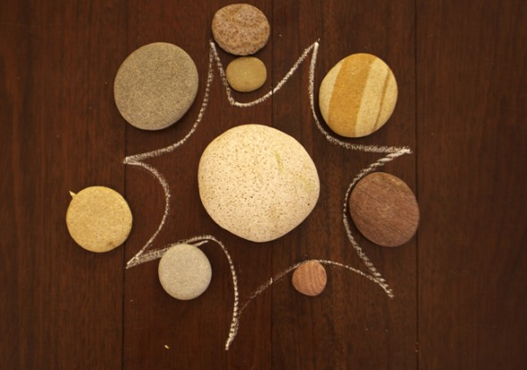
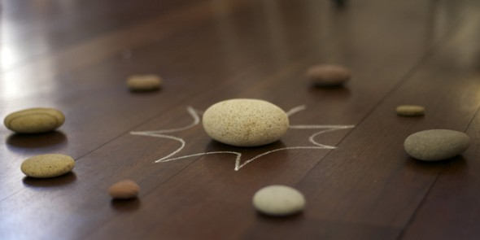
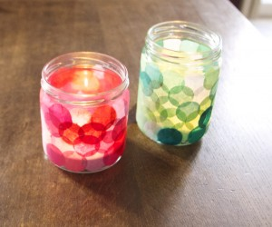
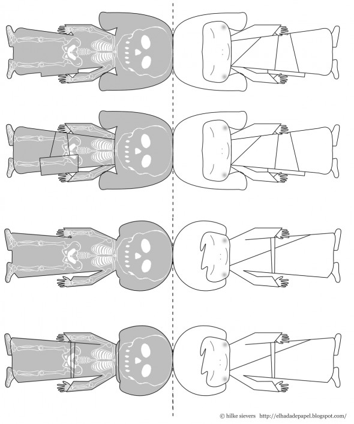
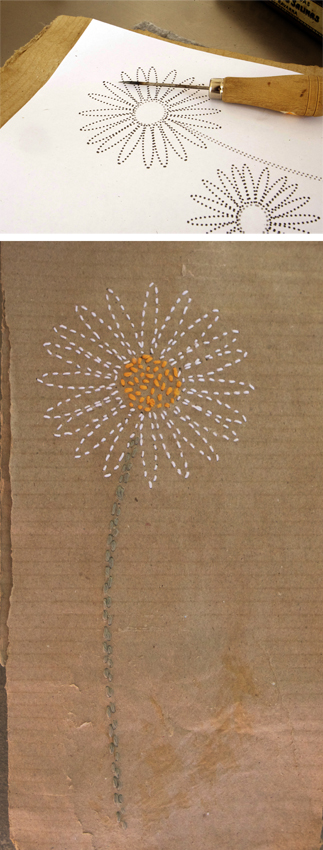
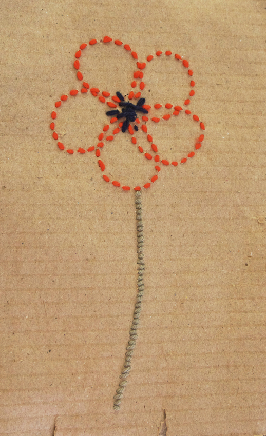
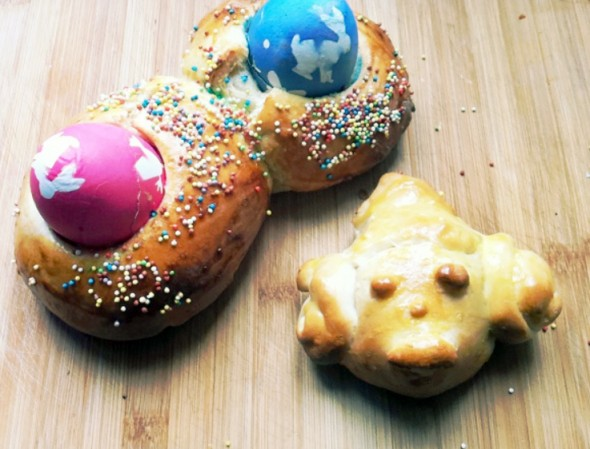
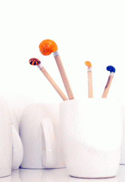
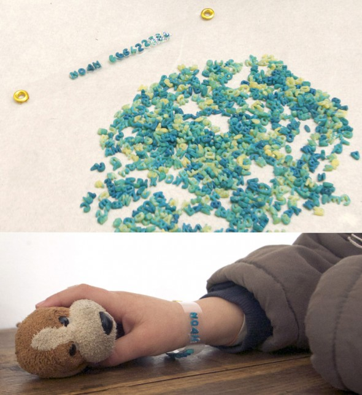

Blog

Piedras
Sistema solar
Unas piedras que hemos traído de la playa son nuestro sistema solar. ¿Cual de ellas es la tierra, la luna….?
Leer más →

Imprimibles
Más Kokeshis
Hasta las Kokeshis tienen huesos ;-). Aquí el enlace para imprimir. Puedes hacer un marca libros como en el post: Kokeshis .
Leer más →

Comida
Verduras
Hemos plantado verduras en la terraza. Están hechas con unas bolsas de plástico (con agujeros) y llenas de tierra. Las pusimos en cajas de madera (que…
Leer más →
Material
Hannahs peluche
Hannah ha hecho su propio diseño de un peluche, está hecho por ella misma! Una auténtica hada de papel!
Leer más →
Comida
Mini Globos
La decoración de la tarta esta hecha con globos de bombas de agua (porque son más pequeños) que hemos llenado de algodón . Como son tan…
Leer más →

Material
Jumping Jack / Hampelmann
Una construcción fácil y estable de cartón. Los agujeros tienen que ser grandes para que los brazos o alas y piernas se quedan sueltos, si no…
Leer más →
Hojas
Decoración
Hemos decorado unas ramas secas con papel e hilo azul. Ya que no teníamos un florero alto hemos usado un florero pequeño. Si lo llenamos de…
Leer más →
Observar
Ellos transportan papas y mucho más. Noah dice que las hormigas son muy afortunados, como tienen mucho mas espacio en la tierra que nosotros.
Leer más →
Coser
Carta de flores
Carta de flores Imprime las flores para pinchar los agujeros en el papel que quieres usar para tu carta.
Leer más →
Coser
Carta de flores 2
Carta de flores Imprime las flores para pinchar los agujeros en el papel que quieres usar para tu carta.
Leer más →
Comida
Primavera
Mhhh flores de mi amiga y vecina Josefa de manera destina. Deseamos una primavera bonita.
Leer más →


Comida
La mona
Tipico en Pascua. Con la masa de levadura se puede hacer muchas formas, y lo mejor: después te las puedes comer! La mona La mona
Leer más →
Material
Mandala Ginko
C on las hojas secas, que hemos recogido en el otoño, se pueden hacer unos patrones guapísimos. Este es un Mandala Ginko.
Leer más →
Agua
Juego
Doblamos pedazos de cinta aislante de distintos colores y los cortamos en trozos pequeños, a continuación ponemos las piezas en un plato lleno de agua. Se…
Leer más →
Actividad
Caracol
Si dejas la casita del caracol al sol, se queda blanco. Nosotros los hemos pintado con el color pintauñas y los hemos puesto en la punta…
Leer más →
Imprimibles
Hoja de trébol
Cosemos hojas de trébol para hacer los agujeros imprime este .pdf . .pdf .
Leer más →
Actividad
Pulsera
Como en los últimos años ( 1. + 2. ) publiqué una pulsera para los niños, que todavía no saben el números de teléfono de sus…
Leer más →
Material
Puentes
Ya estamos empezando a reciclar nuestras propias creaciones. De la torre hacemos unos puentes para que pasen las canicas. Los rollos estan atados una a la…
Leer más →